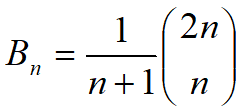
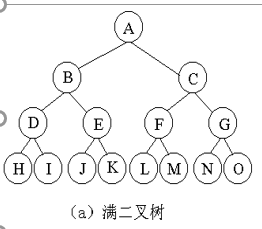
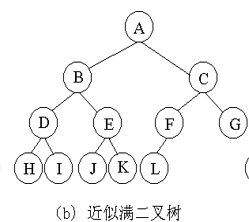

树-二叉树的基本概念原文出处:本文由博客园博主William_Goodman提供。
原文连接:https://www.cnblogs.com/KBryant/p/11613664.html
二叉树的特点
- 每个结点至多有二棵子树(即不存在度大于2的结点)
- 二叉树的子树有左、右之分，且其次序不能任意颠倒
卡特兰数
具有n个结点的不同形态的二叉树数目，即所谓的n阶卡特兰数。（也是含有n个结点的栈的出队顺序的总情况）

二叉树的性质（约定空二叉树的高度为-1）
- 高度为h>=0的二叉树至少有h+1个结点。
- 高度为h>=0的二叉树至多有2h+1-1个结点
- 含有n>=1个结点的二叉树的高度至多为n-1
- 含有n>=1个结点的二叉树的高度至少为[log2n](向下取整)
- 对于任何一棵二叉树，如果其叶节点的数目为n0，度为2的结点数目为n2,则n0=n2+1
证明：设n1为二叉树中度为1的结点数目，故结点总数为n=n0+n1+n2.
在二叉树中，除根结点外，每个结点都有一条分支进入，设B为分支总数，则n=B+1.
又因为分支有度为1和度为2的结点射出，B=n1+2n2
于是n=n1+2n2+1=n0+n1+n2，得到n0=n2+1
满二叉树

- 定义：一棵高度为h且有2h+1-1个结点的二叉树称为满二叉树
完全二叉树

- 定义：若一棵二叉树最多只有最下面的2层上结点的度数可以小于2，并且最下面一层上的节点都集中在该层的最左边，则这种二叉树称为近似满二叉树
- 性质：如果对一棵有n个结点的完全二叉树的结点按层序编号，则对任一结点i(1<=i<=n)，有
(1) 如果i=1，则结点i是二叉树的根，无双亲；如果i>1，则其双亲是[i/2]（向下取整）
(2) 如果2i>n，则结点i无左孩子；如果2i<=n，则其左孩子是2i
(3) 如果2i+1>n，则结点i无右孩子；如果2i+1<=n，则其右孩子是2i+1
- 例题：一棵完全二叉树有1001个结点，其中叶节点的个数是（501）
解：最后一个分支结点的序号为[1001/2]=500,故叶子节点的个数为501